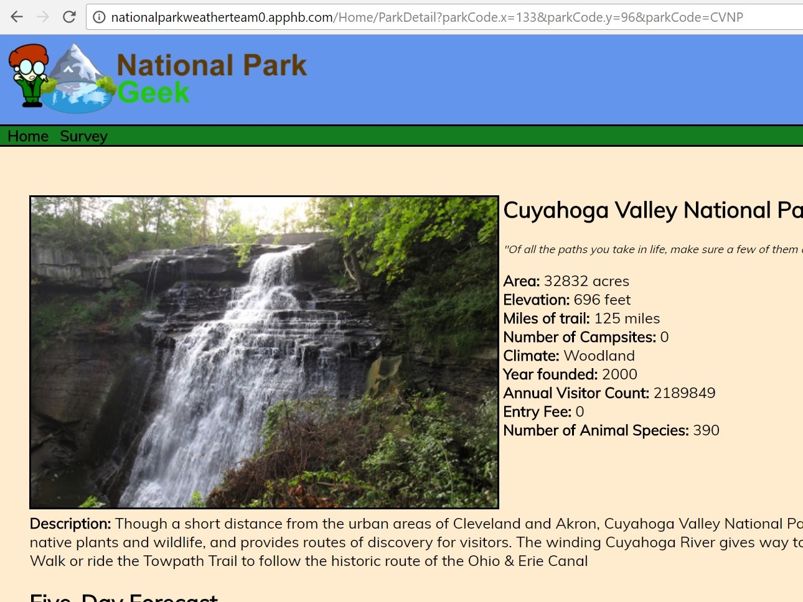
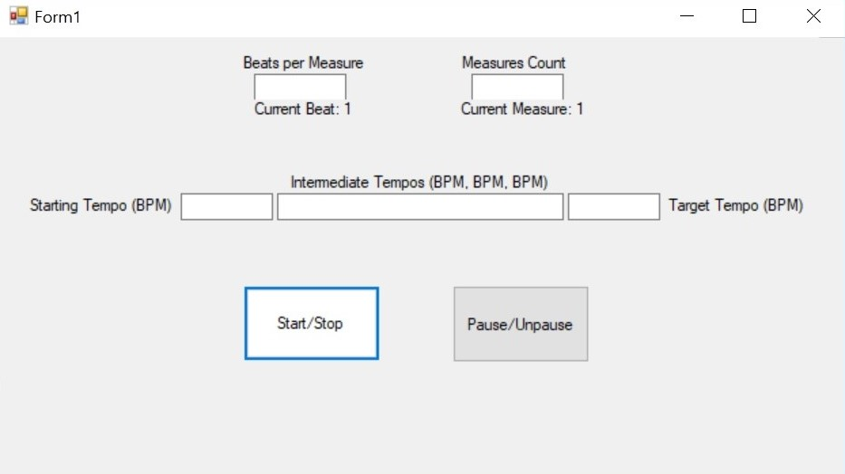
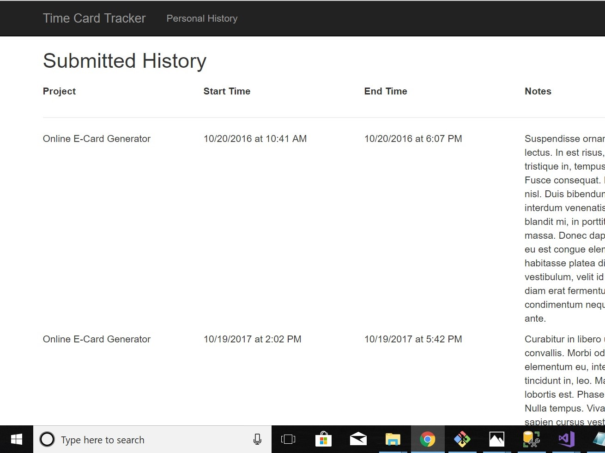

John Slike
Full-Stack Developer
About Me:
"While teaching in the American music classroom, I realized that there was a great need for quality, affordable software designed to help teach and reinforce music concepts. Seeing this need not only in my classroom, but in many music classrooms, I felt that I could and should expand my skill-set to include application development so that some day, I could perhaps contribute to supplying useful, affordable software to the music classroom.
This led me to enroll at Tech Elevator in Cleveland, Ohio where I am currently studying in the .NET cohort."
Personal Projects:
National Park Geek Capstone Project

Metronome Windows Forms Application (WIP)

Freelance Time Card Tracker
